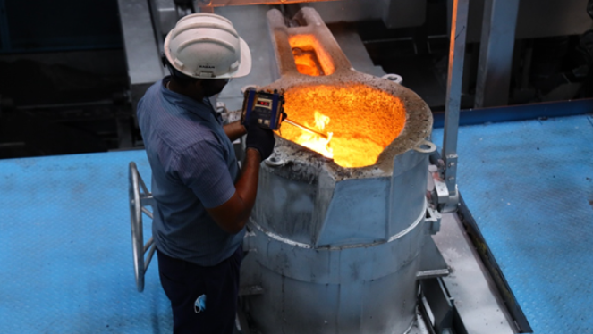
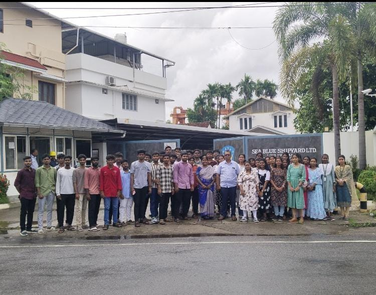
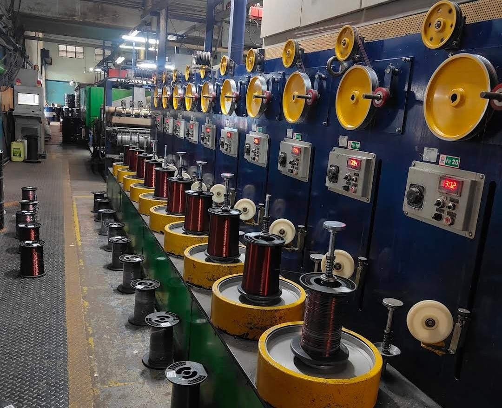
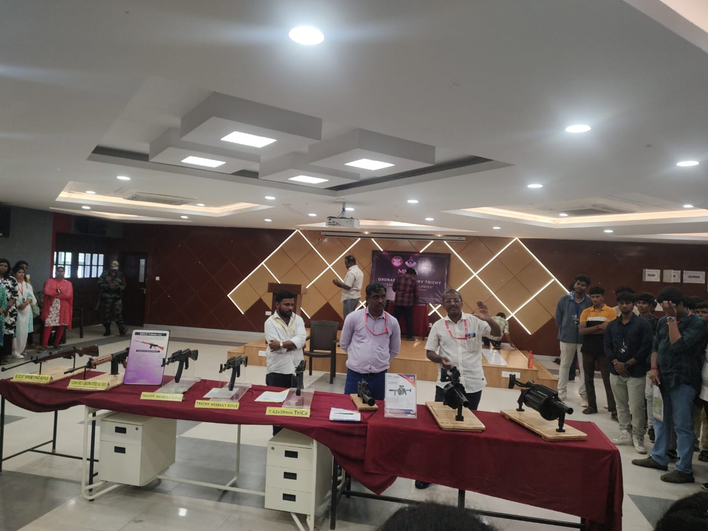
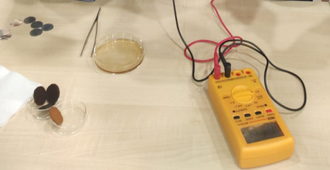
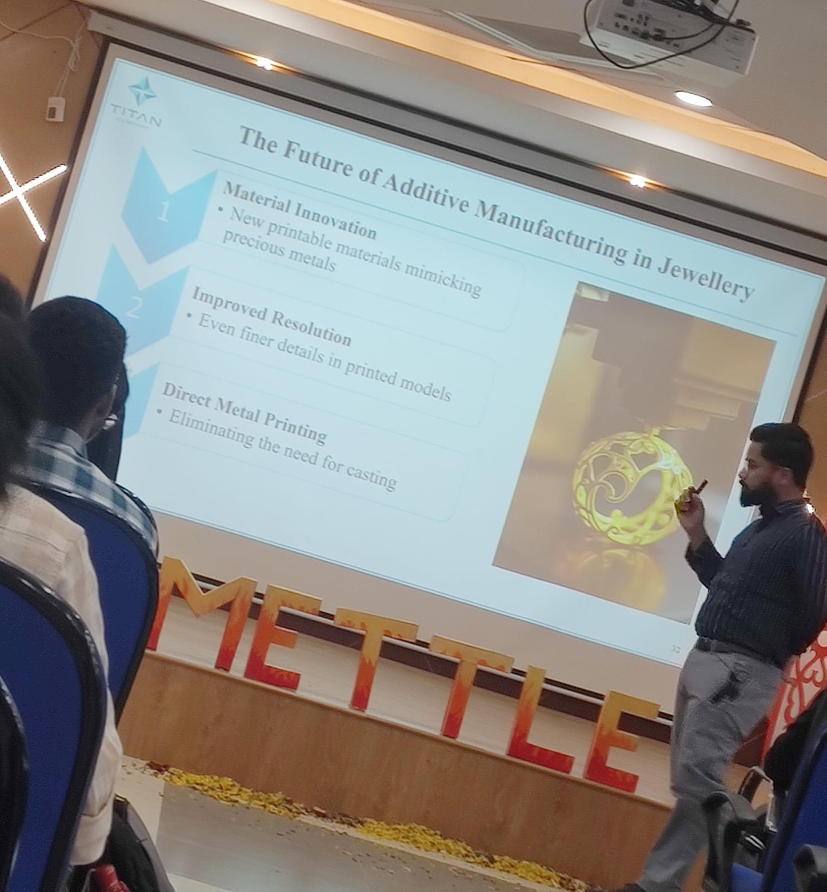

Industrial Visits
1. AquaSub Engineering, Coimbatore
Explored the advanced casting and machining processes used in pump manufacturing. Observed sand casting, shell molding, and quality control techniques.
2. Sea Blue Shipyard, Kochi
Witnessed large-scale marine fabrication, coating, and corrosion control methods. Learned about cathodic protection and marine-grade paint applications.
3. Essvee Wires India pvt Ltd ,Karuppur sidco industrial park , salem .
Drawing wires of various dimension especially copper , both coated with insulating material and non coated .
3. NIT Trichy – 3-Day Technical Visit
First Day Workshop on (OFT) Ordinance Factory Tiruchirappalli , learned about specification and properties of advanced Gun .

Second Day workshop on chemical fuel cell technology , we explored electrochemistry of coins with fuels, battery chemistry.
Third Day workshop on Additive Manufacturing by Tanishq Gold on advanced techniques in investment casting and direct metal laser sinterin .